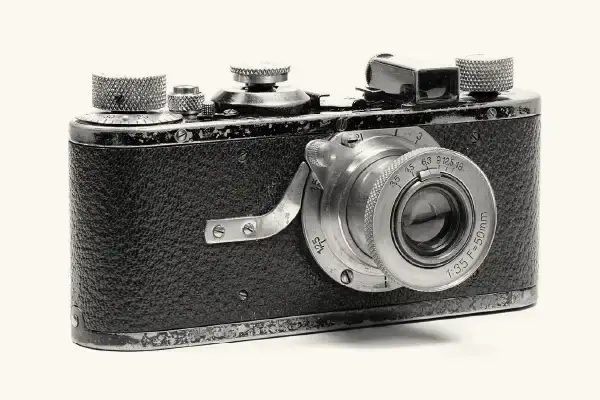
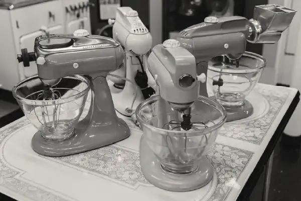
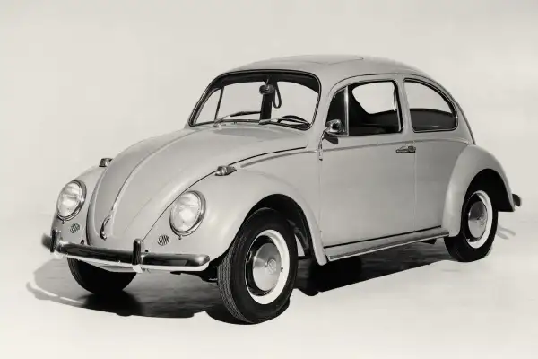
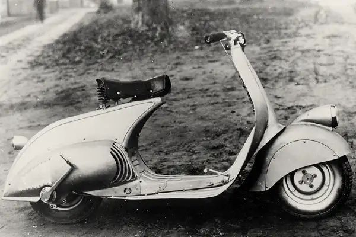
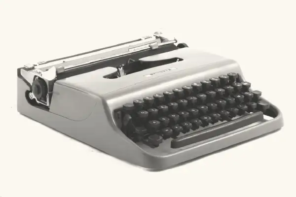
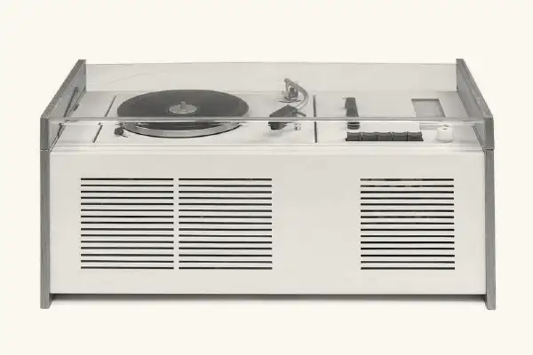

Leica 1(A) Camera (1925)

The world’s first compact and portable 35mm camera was prototyped by Oskar Barnack in 1914. It was the world’s, and developed for mass production later, in 1925. The reinvented camera, The Leica 1(A) consisting of 190 parts, and being significantly smaller than any of the cameras previously produced, became an instant hit. Suddenly, consumers could benefit from the small form factor of a camera that they could take with them anywhere. The Leica 1(A) set a new standard in the industry of personal cameras and to this day remains an iconic example of good industrial design.
KitchenAid Stand Mixer (1930s)

Designed by the American industrial designer Egmont Arens, the KitchenAid Stand Mixer was designed and released in the 1930’s, as an effort to bring a more compact design and better visual appeal to the previously oversized and unflattering commercial Hobart stand mixers. The new design became a success that lasts nearly a century. With more minor improvements and visual enhancements, this stand mixer is one KitchenAid’s bestsellers to this day.
Volkswagen Beetle (1938)

Although the Volkswagen Beetle was not the first hatchback car model in history, but it’s affordability and aesthetic quickly became a part of a cultural impact and a symbol of a movement. Designed by Ferdinand Prosche, and funded by Adolf Hitler, the Beetle was first released to the consumer market in 1938. It’s design is closely tied with the countermovement and the beetles. The model had remained popular enough to be produced for over four decades, with the early 1980’s marking the end of production.
Vespa Scooter (1946)

The Vespa Scooter, designed by the Italian Engineer Corradino d'Ascanio, was released to the consumer market in 1946. It was an innovative vehicle that was a symbol of good taste, efficiency, and functionality. Vespa allowed consumers to ride anywhere and be a part of a lifestyle of travel and optimism in the post WWII world.
Olivetti Lettera 22 Typewriter (1950)

Designed by the Italian designer Marcello Nizzoli, the Olivetti Lettera 22 Typewriter was a more compact redesign of the popular device at the time. This design consisted of lighter materials, making it the first portable typewriter. Later, the model was rebranded by Sears and brought to the North American market where it was a great success as well. The Olivetti Lettera 22 was recognized in 1959 by the Illinois Institute of Technology as the best designed product of the last century.
Braun SK4 Record Player (1956)

Designed by the famous German product designers Dieter Rams and Hans Gugelot, the Braun SK4 was a groundbreaking redesign of the record player in the time when home audio devices were one of the most popular home goods products. With it’s renowned shape, materials, and user experience, The SK4 record player was a symbol of modern lifestyle, and it integrated into mid-century living interiors seamlessly and contributed greatly to the Braun company’s commercial success.